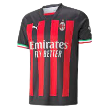
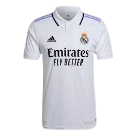
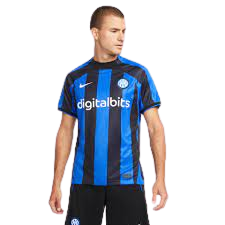

Produtos
DEIVID
Camisa Milan Home 22/23 s/n° Torcedor Masculina
Camisa Real Madrid Home 22/23 s/n° Torcedor Masculina
Camisa Inter de Milão Home 22/23 s/n° Torcedor Masculina
R$ 303,90
R$ 399,99
R$ 349,90
até 3x de R$ 101,30 sem juros
até 3x de R$ 133,33 sem juros
até 3x de R$ 116,63 sem juros
DESCRIÇÃO: o novo manto do Real Madrid chegou pesado para acompanhar os torcedores mais apaixonados em todos os momentos. Semelhante ao modelo que os craques usam nos jogos no Santiago Bernabéu, a camisa titular da temporada 22/23 é produzida com poliéster reciclável, tecnologia Aeroready que auxilia na absorção do suor que te mantém seco durante o uso, além de caimento que prioriza a liberdade de movimentos e oferecendo máximo conforto. Os detalhes em roxo e o escudo bordado na altura do peito deixam essa camisa de futebol ainda mais especial.
DESCRIÇÃO: assim como outras camisas da nossa coleção Stadium, esse modelo combina detalhes de design de réplica com tecido antissuor para oferecer um look preparado para o jogo e inspirado no seu time favorito.Benefícios-Tecnologia Nike Dri-FIT absorve o suor da sua pele para evaporação mais rápida, ajudando a manter você seca e confortável.-O design de réplica é baseado naquele que os craques usam em campo.Detalhes do Produto-Ajuste padrão para sensação relaxada e fácil-100% poliéster-Lavável à máquina-Importado
DESCRIÇÃO: tecnologia Dry Cell: Mantém o suor longe da pele, enquanto os recursos de fluxo de ar anatomicamente colocados oferecem uma superior regulagem de temperatura para manter o corpo seco e fresco durante o uso. Composição: 100% Poliéster Cor predominante: Preta Indicada para: Jogo Gênero: Masculino Origem: Importada Escudo: Bordado Manga: Curta Clube: Milan Gola: V Dimensões aproximadas (A x L): P: 72 x 49 cm M: 73 x 52 cm G: 74 x 56 cm GG: 75 x 63 cm EG: 76 x 65 cm EEG: 80 x 71 cm